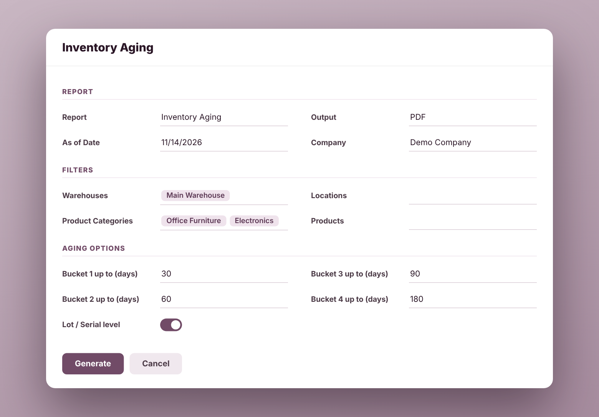
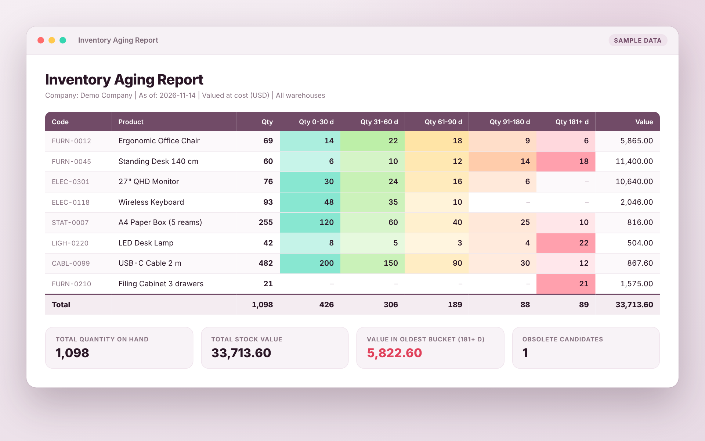
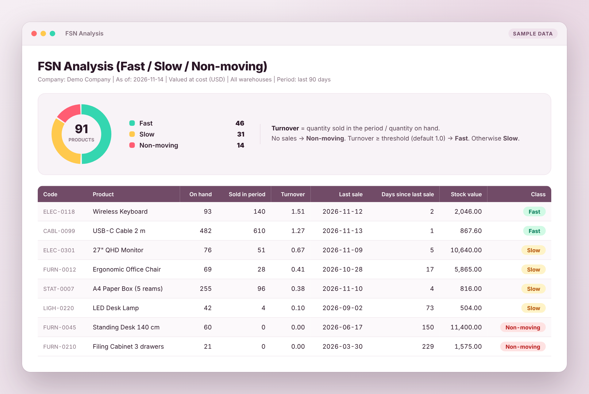
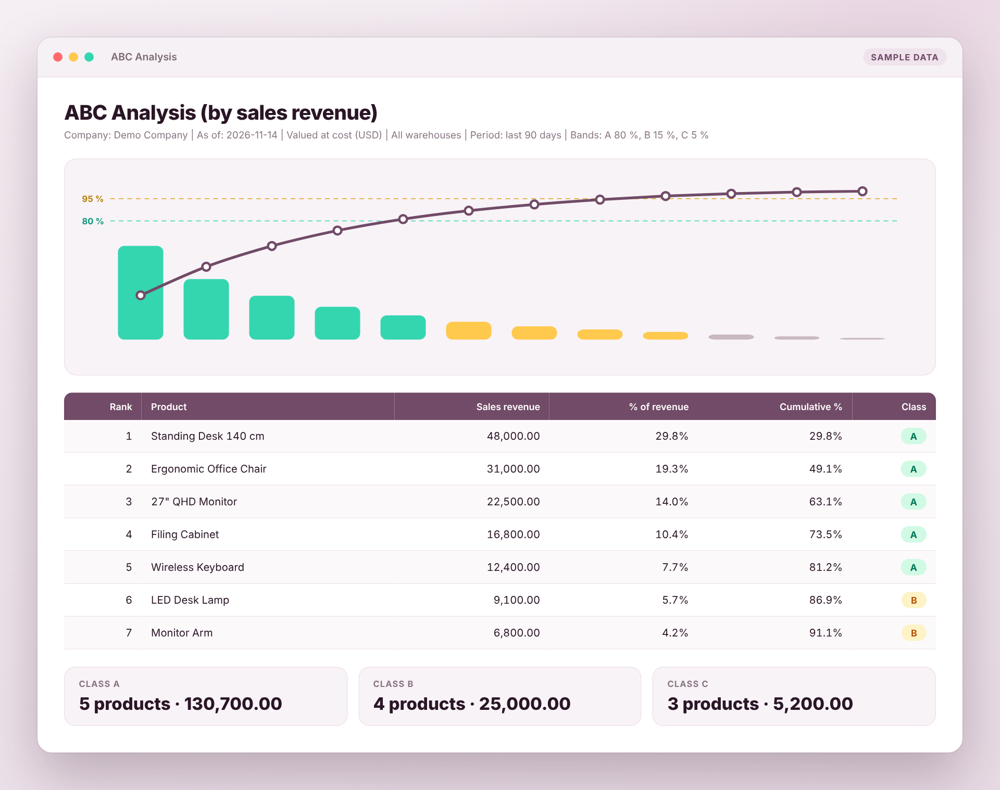

Clear, colour-coded, ready to share
Illustrations below use sample data.

One simple wizard
Choose the report, the date, the output format and your filters: warehouses, locations, product categories or specific products. Aging buckets, look-back period, FSN threshold and ABC bands are all adjustable.
Aging at a glance
A heat map shows exactly where each product’s stock sits by age. Totals, the value tied up in the oldest bucket and the number of obsolete candidates are summed up underneath.


Spot the products that stopped selling
Every product is classed Fast, Slow or Non-moving with its turnover, last sale date and the value of the stock behind it.
The 80/20 of your catalogue
A Pareto chart ranks products by revenue and draws the A, B and C zones, so you know where availability matters most.


Follow the leaks
Scrap and inventory adjustments are consolidated per product and valued, with the biggest losses on top.